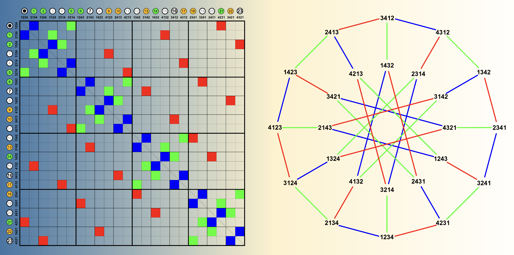

CS 135 C/D/E: Discrete Structures
Discrete Structures CS 135 - Sections C, D, E Spring 2025
Click for Tentative Class Schedule & HW Assignments
General Information
Possible Updates to this Document
Excluding materials for purchase and the instructor, syllabus information may be subject to change. The most up-to-date document can be found through the navigation bar on Canvas.
| Instructor: | Dr. Jacek Ossowski |
| Email: | jossowsk@stevens.edu |
| Lectures Section C: | Tu & Th 9:30am - 10:45am ⟡ Babio 104 |
| Lectures Section D: | Tu & Th 11:00am - 12:15pm ⟡ Babio 104 |
| Lectures Section E: | Tu & Th 2:00pm - 3:15pm ⟡ Babio 203 |
| Class Format: | in-person |
| Office Hours: | Thursdays ⟡ 5pm - 7pm ⟡ GS 246) |
TA Office Hours: | Weekly Schedule → |
Other Q&A resource: peer discussion forum will be set up on discord.com. See the "Software" section for instructions on joining our class on Discord.
Required Textbook
Discrete Mathematics with Applications by Susanna
Epp, 5th edition
You will need to gain access to the WebAssign course associated with the textbook in order to complete the online homework assignments. For a possible purchasing option click this Cengage link and press the "WebAssign" tab. Here is a
quick start guide for enrollment in our WebAssign course. The code for the class is
STEVENS52958757.
For comprehensive help with purchasing options and WebAssign, Cangage will hold their office hours from 01/13/2025 to 02/07/2024 (excluding MLK day) where you can ask all your questions.
Recommended: Discrete Mathematics and its Applications, Kenneth Rosen, McGraw Hill, 8th edition.
Description of Course
This course forms an indicspensable foundation for any serious studies in Computer Science. After successful completion, you will acquire the necessary vocabulary and toolkit of techniques that are used throughout the rest of the curriculum. In particular, you will able to perform the following tasks in each of the below areas:
- Formal logic – Prove validity of propositional formulas using truth tables, laws of logic, and the tree method.
- Sets, Functions and Relations – Prove set identities using set-builder notation and laws of propositional logic. Prove basic properties of functions (injective, surjective, bijective) and relations (reflexive, commutative, transitive) using logical reasoning.
- Induction – Use inductive reasoning to solve problems and to prove properties of discrete structures and recursive programs.
- Scheme - Implement recursive functions over lists, relations, and numbers. In order to work with Scheme you will need to install DrRacket on your machine. See the Software Requirements section below.
- Number Theory – Define and prove properties such as primality and relative primality. Implement Euclid’s algorithm to calculate gcds.
- Modular Arithmetic – Define and prove properties of modular arithmetic, including Chinese Remaindering and Fermat’s Little Theorem. Apply the theory to design and evaluate private- and public-key cryptographic systems.
- Graphs – Prove basic properties of trees, Eulerian cycles, and if time permits, planar graphs.
Online Assignments
Online assignments and their due dates will be posted on WebAssign. These assigments will account for 10% of your final grade.
Written Assignments
- There will be 10 written homework assignments.
-
The written assignments should be submitted to Canvas and should be typed using Microsoft Word, Latex or another word processor. Manuscripts in longhand will be accepted only if they are neetly written. Penalties will be applied for illegibilty, and we reserve the right to reject papers that are unacceptably messy. The students are responsible for checking that the uploaded submissions are complete (by, for example, downloading them back and verifying that the files are not corrupted).
No late homework will be accepted. Assignments submitted on time in a wrong place will not be graded.
-
If you have any questions regarding your homework, test or quiz scores, you must address them within two weeks after those scores have been received. Scores more than two weeks old will not be reviewed.
-
The binding due date of an assignment will be posted weekly on Canvas.
Labs
Another 10% of your grade will be based on Scheme programming exercieses. For that reason, as mentioned above, you will need to install DrRacket on your machine (as described in the Software Requirements). Lab assignments will be posted weekly shortly before lab sessions, and you will start working on them during labs. They will be due at 11:59 pm on the day of the lab or shortly thereafter. Details regarding submission of .rkt files will follow soon.
Exams
- There will be one midterm exam and a final exam.
- There will be no make-up exams given after the exam date. If you know in advance that you will have to miss an exam, you must check with me (in advance) to avoid getting a zero for that exam. In case of an illness/accident on an exam date, please contact me as soon as possible and provide appropriate, credible documentation, so that suitable arrangements can be made. An e-mail from a student stating that they will miss an exam for an uncorroborated reason is not enough.
Attendance
Since it is important to attend lectures and labs, we will be taking attendance. You will be allowed three unexcused absences during the semester. Attendance will account for 5% of
your final grade.
Grading
| Participation: |
4% |
| Online Assignments: |
10% |
| Written Assignments: |
20% |
| Labs: |
10% |
| Midterm Exam: |
28% |
| Final Exam: |
28% |
The worst two online, lab, and written assignments will not be counted towards your grade. Please note that this allowance can be easily depleted, and you should take advantage of it judiciously.
Written assignment-, lab-, and exam scores will be kept on Canvas. The online assignment scores will be managed on WebAssign. Please note that Canvas calculates automatically a number of running averages which are not informed by our course's policy (i.e., Canvas does not know how much weight is assigned to every ingredient listed in the above table, nor does it know that two worst assignments will be dropped). It is impossible to turn those calculations off so please disregard them. To see how well you are doing in the course please calculate the average for each ingredient of the course and take the weighted average as specified in the table.
IMPORTANT NOTE: If on all three written ingredients of the course (i.e., written homework, midterm exam, and the final exam) a student scores < 60%, then regardless of the scores on the other parts of the course, the student's overall grade will be an F.
Grading Scale
| Numeric Grade |
Letter Grade |
| 93+ |
A |
| 90-92 |
A- |
| 87-89 |
B+ |
| 83-86 |
B |
| 80-82 |
B- |
| 77-79 |
C+ |
| 73-76 |
C |
| 70-72 |
C- |
| 67-69 |
D+ |
| 63-66 |
D |
| 60-62 |
D- |
| 0-59 |
F |
Discord Discussion Forum
If you have a question regarding the material or homework, chances are that somebody might have encountered that problem already. Check our Discord discussion forum first and post your question there if it has not been answered yet (see the "Software" section for setup).
If you don't get the answer this way in a reasonable amount of time, (only then) you can ask me that question outside of my office hours. Naturally, you can ask me any question regarding the course during my office hours.
Hardware and Technical Requirements
The hardware/technical requirements for this course include:
-
Computer satisfying the following minimum technical requrements
- In general, the device must be portable, sufficiently up to date, and have adequate memory and storage so that it can run the current version of its operating system
- Intel Core i5 or AMD Ryzen 5 processor (i7 or Ryzen 7 preferred)
- 8GB of RAM (16 GB preferred)
- Mac OS 10.15 or Windows 10
- 256 GB SSD hard drive (512 GB preferred)
- Wireless networking adapter
- Camera and microphone
-
Dedicated access to high-speed internet with a minimum speed of 1.5 Mbps (4 Mbps or higher is recommended).
-
Webcam (for proctoring during remote exams)
-
Microphone (a working microphone in your computer is fine)
-
Respondus Lockdown Browser (if exams are held remotely)
-
If exams are held remotely, it will be your responsibility to ensure that all the involved technology works as expected (i.e., your computer, internet, webcam, etc.).
-
Fortunately, all students I gave a remote exam to in the past were able solve all their technical issues. Being able to set up the equipment needed for remote learning and
ensure that it works properly has become a prerequisite of academic coursework.
Software
- Canvas (free) - Hosts all class materials and meetings.
- DrRacket (free) - Scheme interpreter and IDE (and more)
- Discord (free) - Communication platform for discussions. Use the link in the course navigation bar on Canvas to join this class on Discord. When choosing your Discord name please give your full name.
Install (cut-and-paste https://discord.com/download into the browser if the link does not work)
- Privacy Statement (cut-and-paste https://discord.com/privacy into the browser if the link does not work)
For information on managing your privacy at Stevens Institute of Technology, visit the University’s Privacy page.
NOTE: This course has NOT been designed for use with mobile devices.
Communication
- The homework assignments, solutions, and announcements will be posted on Canvas.
- Please ensure that you can receive emails from Canvas so that you can get course announcements. However, if you need to contact me, please email me under the @stevens address. I do not check my Canvas mailbox.
- Discussions will take place on Discord. I will also answer questions Discord, but I encourage students to try to answer questions jointlyg as well.
- Do not ask for or provide actual solutions to homework problems on Discord.
- Personal questions should be sent directly to my email or handled in person during office hours.
- I will not answer emails from Friday 6pm to Monday 9am.
Collaboration
All homework assignments must be completed individually.
You must first consider each problem on your own and generate ideas on how to solve the problem.
You may discuss how to solve homework problems only at a high level, e.g., "I used such and such theorem", or "this chapter in the textbook handles a similar problem". Do not go further than this.
You must write solutions completely on your own.
Do not use other resources (outside of your textbooks) to find partial or whole homework/test problems' solutions. This includes using language models such as ChatGPT or searching for whole or partial solutions on the Internet.
Posting the problems assigned in this course on the Internet (say, Reddit, Chegg, etc.) is not allowed.
Accommodation For Personal Circumstances including Religious Holidays
The course offers generous allowance for personal circumstances such as family events, religious holidays not observed by SIT, or other situations. You are allowed to miss three lectures without any impact on your participation score. Two worst written homework assignments, two lab assignments, and two online assignments will be dropped at the end of the semester. Please plan accordingly in order not to deplete prematurely the course's allowance so that you can confine your special needs within the provided limits. No additional relief will be offered for the above reasons. Further accommodation may only be provided in cases of credibly documented illness, hospitalization, an accident, or similarly serious and unexpected situations.
Academic Integrity
Undergraduate Honor System
Enrollment into the undergraduate class of Stevens Institute of Technology signifies a student's commitment to the Honor System. Accordingly, the provisions of the Stevens Honor System apply to all undergraduate students in coursework and Honor Board proceedings. It is the responsibility of each student to become acquainted with and to uphold the ideals set forth in the Honor System Constitution. More information about the Honor System including the constitution, bylaws, investigative procedures, and the penalty matrix can be found online.
The following pledge shall be written in full and signed by every student on all submitted work (including, but not limited to, homework, projects, lab reports, code, exams) that is assigned by the course instructor. No work shall be graded unless the pledge is written in full and signed.
“I pledge my honor that I have abided by the Stevens Honor System.”
Reporting Honor System Violations
Students who believe a violation of the Honor System has been committed should report it within ten business days of the suspected violation. Students have the option to remain anonymous and can report violations online
The collaboration policy described above is designed to allow students the resources to succeed while ensuring they learn and master the material. If you are unsure whether something is acceptable according to the collaboration policy, talk to me!
Violations of this policy will be considered violations of the academic integrity policy and will be reported to the appropriate school offices.
Consequences may include (but are not limited to) failure of the class. Academic misconduct includes, but is not limited to:
- jointly writing solutions
- copying or plagiarizing solutions in whole or in part from fellow students or other sources
- screen sharing text/code on any platform (Discord, VS Code LiveShare, …) counts as sharing the solution.
- unintentionally sharing solutions through platforms mentioned above, or sharing more of the solution than you intended.
- it is your responsibility to be mindful of who can access your files and which files they can access;
note that it may be easy for strangers to access voice channels on a Discord server and that many code/text sharing platforms (e.g. VS Code LiveShare)
give participants access to all files and directories within the directory you share.
- cheating on the exams
- discussing any information about exams with classmates before all grades are posted.
- posting questions on forums like Reddit, StackOverflow, or Chegg. You can refer to previously posted questions on these forums, but not create new ones for this course.
Learning Accomodations
Stevens Institute of Technology is dedicated to providing appropriate accommodations to students with documented disabilities. The Office of Disability Services (ODS) works with undergraduate and graduate students with learning disabilities, attention deficit-hyperactivity disorders, physical disabilities, sensory impairments, psychiatric disorders, and other such disabilities in order to help students achieve their academic and personal potential. They facilitate equal access to the educational programs and opportunities offered at Stevens and coordinate reasonable accommodations for eligible students. These services are designed to encourage independence and self-advocacy with support from the ODS staff. The ODS staff will facilitate the provision of accommodations on a case-by-case basis.
Student Disability Files are kept separate from academic files and are stored in a secure location within the Office of Disability Services. The Family Educational Rights Privacy Act (FERPA, 20 U.S.C. 1232g; 34CFR, Part 99) regulates disclosure of disability documentation and records maintained by Stevens Disability Services. According to this act, prior written consent by the student is required before our Disability Services office may release disability documentation or records to anyone. An exception is made in unusual circumstances, such as the case of health and safety emergencies.
For more information about Disability Services and the process to receive accommodations, visit https://www.stevens.edu/office-disability-services. If you have any questions please contact: Phillip Gehman, the Director of Disability Services Coordinator at Stevens Institute of Technology at pgehman@stevens.edu or by phone (201) 216-3748.
Inclusion Statement
Stevens Institute of Technology believes that diversity and inclusiveness are essential to excellence in academic discourse and innovation. In this class, the perspective of people of all races, ethnicities, gender expressions and gender identities, religions, sexual orientations, disabilities, socioeconomic backgrounds, and nationalities will be respected and viewed as a resource and benefit throughout the semester. Suggestions to further diversify class materials and assignments are encouraged. If any course meetings conflict with your religious events, please do not hesitate to reach out to your instructor to make alternative arrangements.
You are expected to treat your instructor and all other participants in the course with courtesy and respect. Disrespectful conduct and harassing statements will not be tolerated and may result in disciplinary actions.
Name And Pronoun Usage
As this course includes group work and in-class discussion, it is vitally important for us to create an educational environment of inclusion and mutual respect. This includes the ability for all students to have their chosen gender pronoun(s) and chosen name affirmed. If the class roster does not align with your name and/or pronouns, please inform the instructor of the necessary changes.
Mental Health Resources
Part of being successful in the classroom involves a focus on your whole self, including your mental health. While you are at Stevens, there are many resources to promote and support mental health. The Office of Counseling and Psychological Services (CAPS) offers free and confidential services to all enrolled students who are struggling to cope with personal issues (e.g., difficulty adjusting to college or trouble managing stress) or psychological difficulties (e.g., anxiety and depression). Appointments are strongly encouraged and can be made by phone (201-216- 5177) or in-person (on the 7th floor of the Howe Center). CAPS is open from 9:00 am – 5:00 pm Mondays, Wednesdays, Thursdays and Fridays and from 9:00 am – 7:00 pm on Tuesdays during the Fall and Spring semesters.
Emergency Information
In the event of an urgent or emergent concern about the safety of yourself or someone else in the Stevens community, please immediately call the Stevens Campus Police at 201-216-5105 or their emergency line at 201-216-3911. These phone lines are staffed 24/7, year round. Other 24/7 resources for students dealing with mental health crises include the National Suicide Prevention Lifeline (1-800-273-8255) and the Crisis Text Line (text “Home” to 741-741). If you are concerned about the wellbeing of another Stevens student, and the matter is not urgent or time sensitive, please email the CARE Team at care@stevens.edu. A member of the CARE Team will respond to your concern as soon as possible.
Copyright
My lectures, notes, handouts, and displays are protected by state common law and federal copyright law. They are my own original expression. Students may take notes. In addition, students will be consulted before using their solutions either with or without their name.
Last modified: January 11, 2025